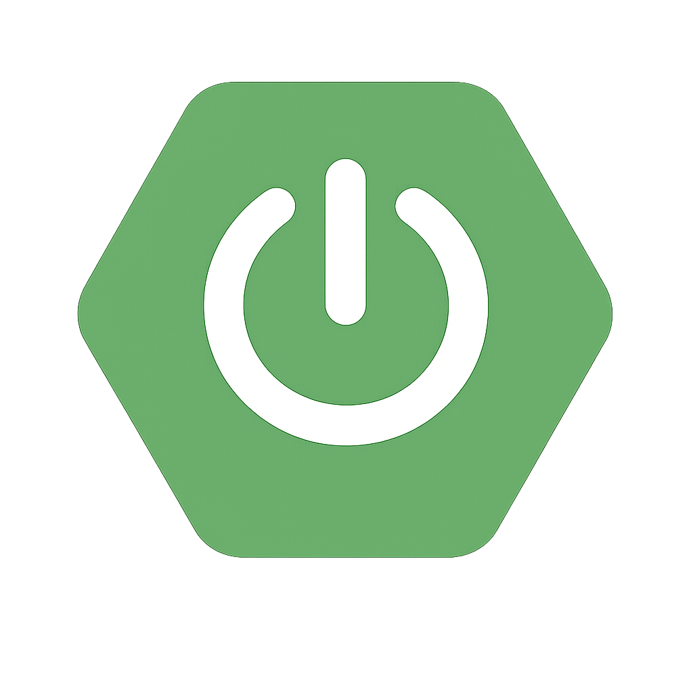

Transformo ideias em APIs seguras, escaláveis e prontas para produção.
Desenvolvo soluções back-end focadas em resolver problemas reais de negócio, com código limpo, arquitetura organizada e alta performance. Utilizo o ecossistema Spring para criar APIs confiáveis e preparadas para evoluir com eficiência.

MINHAS ESPECIALIDADES.
APIs REST com Spring Boot
Criação de APIs bem estruturadas utilizando Spring Boot, seguindo padrões de mercado para garantir organização, clareza no código e facilidade de manutenção.
Segurança com Spring Security & JWT
Implementação de autenticação e autorização com Spring Security e JWT, garantindo proteção de dados e controle de acesso seguro.
Banco de Dados & Performance
Modelagem de bancos MySQL priorizando a organização e a velocidade. Estruturas pensadas para garantir a integridade das informações e facilitar a manutenção do sistema.
MUITO PRAZER, SOU FAUZY SOUSA.
Muito prazer, sou Fauzy Sousa. Sou desenvolvedor back-end com foco no ecossistema Java, atuando principalmente com Spring Boot na construção de APIs REST seguras, organizadas e performáticas. Tenho experiência prática com Spring Security e autenticação via JWT, além de trabalhar com persistência de dados utilizando MySQL e ambientes padronizados com Docker.
Mais do que apenas fazer o código funcionar, me preocupo com a qualidade da solução como um todo. Busco aplicar boas práticas, manter uma arquitetura limpa e escrever código que seja fácil de entender, manter e evoluir. Atualmente, estou em busca da minha primeira oportunidade como desenvolvedor back-end, pronto para contribuir com soluções eficientes e crescer com desafios reais do mercado.